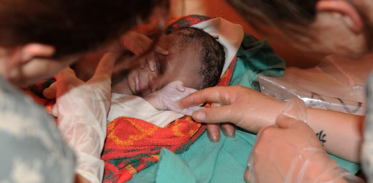
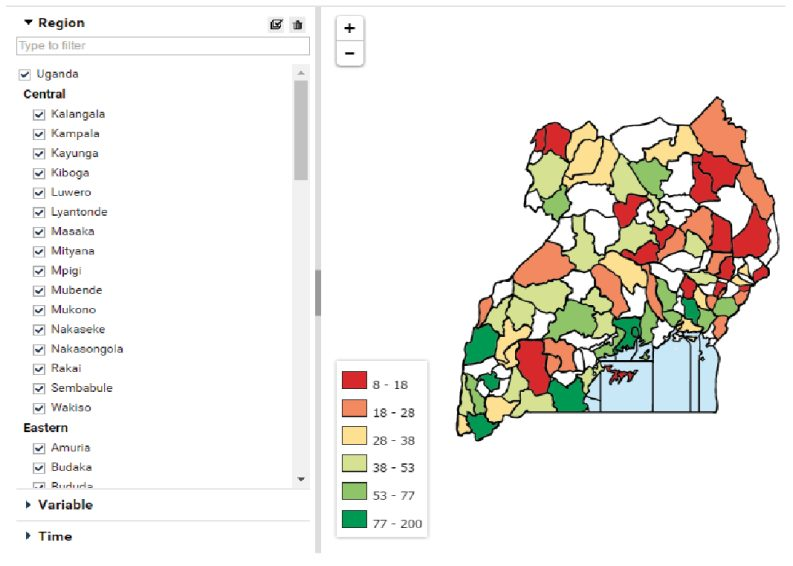
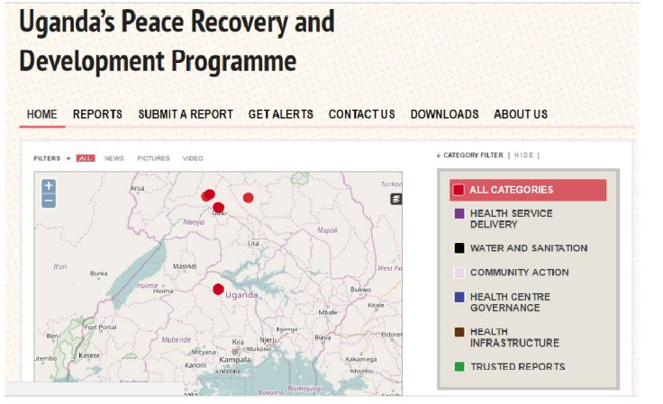

اوگاندا دارای یکی از بدترین سیستم ها برای ارائه مراقبت های بهداشتی در جهان است و در نتیجه، ضعیف ترین نتایج بهداشتی برای شهروندانش را داراست. چندین عامل به طور قابلتوجهی به نتایج ضعیف سلامتی کمک میکنند - فقدان کارکنان بهداشتی برای رسیدگی به نیازهای جمعیت در حال رشد؛ فساد فراگیر در بخش خدمات درمانی؛ و عدم وجود اطلاعات (به عنوان مثال، مربوط به شیوع بیماری، شاخصهای ارائه خدمات بهداشت و درمان، و پیامدهای بهداشتی) که میتواند برای قضاوت و اولویتبندی آگاهانه مورد استفاده قرار گیرد.
در سال ۲۰۱۱، همکاری در زمینه سیاست ICT بینالمللی برای آفریقای شرقی و جنوبی (CIPESA) ترویج استفاده از ICT برای نظارت بر حاکمیت و ارائه خدمات در اوگاندا را آغاز کرد. این پروژه توسط برنامه سوئدی ICT در مناطق در حال توسعه (SPIDER) تامین مالی شد. پروژه iParticipate براساس تجربه و شبکههای توسعهیافته توسط CIPESA از طریق پروژه قبلی، به دنبال استفاده از دادههای حاکمیتی باز است تا مشارکت شهروندان و حاکمیت پاسخگوتر را ممکن سازد.
ملموسترین نتیجه این اقدام، آموزش بهتر سازمانهای جامعه مدنی و روزنامهنگاران در استفاده از دادهها برای پیشبرد روند حمایت از مراقبتهای بهداشتی بودهاست. این امر منجر به افزایش آگاهی عمومی در مورد سرمایهگذاریهای ضعیف دولتی در زمینه سلامت شدهاست. بااینحال، شواهد اندکی درباره بهبود محسوس در ارائه خدمات بهداشت و درمان وجوددارند. این ابتکار با چالشهای متعددی مواجه شدهاست - از جمله چالشهای مربوط به زیرساختهای فنی و ظرفیت کم ICT - و آینده iParticipate تا حدودی نامشخص باقی ماندهاست.
پیشینه و زمینه
تمرکز بر مسئله / زمینه کشور
طبق گفته سازمان بهداشت جهانی (WHO)، اوگاندا در میان بدترین مفاد ارائه خدمات بهداشتی در جهان قرار دارد، که منجر به پیامدهای بهداشتی ضعیفی برای شهروندان خود میشود. این کشور دارای کمترین میزان امید به زندگی (۵۴ سال در سال ۲۰۱۵) و بیشترین نرخ مرگ و میر (۳۴۴ در سال ۲۰۱۳) در جهان است. تا سال ۲۰۱۵، یکی از هر ۳۰۰ تولد، زندگی یک مادر را به پایان میرساند، و یکی از هر ۳۰ کودکی که به دنیا میآید، قادر نیست که بیش از یک سال زنده بماند. بیماریهای قابل انتقال، به ویژه سل، بیشترین سهم بیماری در کشور را به خود اختصاص دادهاند. میزان شیوع HIV بالا است، با حداقل ۱.۵ میلیون نفر مبتلا، و این کشور در میان کشورهایی است که بیشترین موارد جدید HIV/AIDS در جهان را دارند.
عوامل متعددی در چنین پیامدهای سلامتی ضعیفی نقش دارند. اول، کمبود جدی کارکنان بهداشتی وجود دارد که میتوانند به نیازهای جمعیت در حال رشد توجه کنند. به عنوان مثال، یک مطالعه اخیر به نسبت بسیار پایین ارائهدهندگان خدمات درمانی به جمعیت در کشور اشاره کرد، که با بودجه ناکافی همراه بوده و تشدید شد. اغلب پرسنل پزشکی در مناطق شهری متمرکز هستند، که این مساله به ضرر بیماران در مناطق روستایی است. مشکل دیگر فساد فراگیر در بخش خدمات سلامت است که به طرق مختلف نمایان می شود، از جمله عدم حضور کارگران حقوقبگیر به موقع و بدون ترس از عواقب آن و سوء استفاده از بودجه عمومی برای ساخت تأسیسات خدمات بهداشتی.
کمبود اطلاعات نیز کیفیت ارائه خدمات را مختل میکند. مطالعات به طور خاص به کمبود دادههای مربوط به شیوع بیماری، شاخص ارائه خدمات، و نتایج سلامت اشاره میکنند. در حالی که برخی از اشکال داده سلامت جمعآوری میشوند، اینها عمدتا در قالبهای کاغذی هستند و به صورت عمومی به اشتراک گذاشته نمیشوند. وبسایت وزارت بهداشت اوگاندا، که ظاهرا مخزن داده در دسترس عموم درباره سلامت در کشور است، تمام اطلاعات را به صورت فایلهای PDF منتشر میکند. دادهها اغلب به اندازه کافی جزئی نیستند تا به تجزیه و تحلیل مفید کمک کنند و دسترسی به اطلاعات زیاد، از جمله دادههای منابع انسانی سلامت، اغلب محدود میشود.
دادههای باز در اوگاندا
طبق میزانسنج دادههای باز ۲۰۱۵، کشور اوگاندا در میان ۹۲ کشوری که مورد بررسی قرار گرفتند، رتبه ۷۰ را کسب کردند. دولت تلاشهایی برای استفاده از فنآوری اطلاعات و شیوههای دولت الکترونیک برای بهبود ارائه خدمات عمومی انجام دادهاست. علاوه بر این، چندین وزارتخانه، به ویژه بهداشت، محیطزیست و آمار ملی، آشکارسازی فعال دادهها را به صورت آنلاین انجام دادهاند، اگرچه در وبسایتهای جداگانه و پیوند نیافته و در قالبهای ناسازگار که استفاده از داده را دشوار میسازد نیز چنین نیست.
در سال ۲۰۱۵، گزارش بانک جهانی در مورد آمادگی داده باز در اوگاندا تاکید کرد در حالی که کشور در موقعیت مناسبی برای اجرای یک اقدام داده باز قرار دارد، توانایی آن برای انجام صحیح این کار به مسائل مربوط به سیاست، ظرفیت دادهها و مشارکت مدنی بستگی دارد.
تا به امروز، هیچ سیاستی وجود ندارد که افشای دادههای دولت و حفاظت از حریم خصوصی را اجباری کند. علاوه بر این، کمبود مشخصی از مهارتهای فنآوری از سوی کارمندان دولت وجود دارد. شهروندان همچنین در توانایی خود برای دسترسی به دادهها از طریق دسترسی به پهنای باند ضعیف و دادههای کم، محدودیت دارند.یک بازبینی که توسط شرکت ایندیگو تراست، یک سازمان مالی متمرکز بر شفافیت و پاسخگویی که در کشورهای جنوب صحرای آفریقا، تامین مالی شد، دریافت که بیش از ۱۰ مکانیزم افشای داده در دولت اوگاندا وجود دارد، اما این موارد تنها تعداد کمی از سازمانهای دولتی، یعنی مالی، آب و محیطزیست و آمار ملی را پوشش میدهند. فقدان یک پورتال داده دولتی باز متمرکز، چندین نقشآفرین را بر آن داشت تا دادههای مربوط به حکومت اوگاندا و زندگی عمومی را در پورتالهای مختلف مانند data.ug (پشتیبانیشده توسط یونیسف)، uganda.opendataforafrica.org (با حمایت بانک توسعه آفریقا) و چندین پورتال را توسط سایر ابتکارات متمرکز بر بخش که توسط سازمانهای جامعه مدنی، آژانسهای بینالمللی و دانشگاهها آغاز شده است منتشر کنند.
تمایل فعالان بخشهای غیر دولتی برای پر کردن شکاف داده باز باقی مانده توسط دولتها یک موضوع مشترک در این مجموعه از مطالعات موردی است.
جمعآوری و افشای اطلاعات در سیستم بهداشت و درمان اوگاندا
وزارت بهداشت اوگاندا مسئول یکی از بخشهای مهم کشور است. ماموریت اولیه آن تدوین سیاستهای مربوط به سلامت، مدیریت مشارکت، بسیج منابع، ظرفیتسازی، و کنترل کیفیت در ارائه خدمات سلامت، و همچنین نظارت و ارزیابی عملکرد کلی بخش سلامت در سراسر کشور و در هر سطح از دولت است.
ارائه مراقبتهای بهداشتی در اوگاندا توسط فعالان دولتی و خصوصی انجام میشود. ارائهدهندگان خدمات بهداشت عمومی دارای یک ساختار غیرمتمرکز هستند که شامل بیمارستانهای دولتی، بیمارستانهای منطقهای نیمهمستقل، و یک سیستم بهداشت منطقهای به خوبی تثبیتشده تحت رهبری مدیریت خدمات بهداشتی منطقه در هر یک از ۱۱۱ منطقه کشور است. هدف از تمرکززدایی این بود که خدمات حتی به دورترین جوامع هم برسد، و مراکز سلامت در کشور به چهار دسته تقسیم شوند (از ابتداییترین تسهیلات، مرکز سلامت ۱، تا پیشرفتهتر، مرکز سلامت ۴). ارائه خدمات بهداشت و درمان مبتنی بر یک سیستم ارجاع است، با توجه به سطح پیچیدگی و امکانات مورد نیاز، تعداد موارد افزایشیافته است.
ارائه خدمات درمانی در بخش خصوصی توسط تعدادی از فعالان ارائه میشود. این موارد شامل ارائهدهندگان خصوصی مبتنی بر تسهیلات، ارائهدهندگان سود (PNFP)، PNFPهای مبتنی بر موارد غیرتسهیلات، متخصصان سلامت خصوصی، و ارائهدهندگان خدمات پزشکی سنتی است. PNFP های مبتنی بر تجهیزات آنهایی هستند که بیمارستانها و کلینیکهای خود را دارند یا اداره میکنند؛ نمونهای از PNFP که فاقد تسهیلات است، یک سازمان غیردولتی است که خدمات پزشکی ارائه میکند. متخصصان سلامت خصوصی به کسانی اشاره میکنند که خدمات بهداشتی سطح اولیه و ثانویه را ارائه میدهند و شامل طیف گستردهای از فعالان، مانند مراکز تشخیصی، کلینیکهای پزشکی و دندانپزشکی خصوصی، و داروخانهها هستند.
ظرفیت مردم اوگاندا برای جستجوی درمان از ارائهدهندگان خدمات بهداشتی بخش خصوصی، بدون نیاز به طی کردن فرآیند طولانی ارجاع در سیستم دولتی، تحتتاثیر ظرفیت مالی و موقعیت جغرافیایی آنها قرار دارد. در برخی مناطق، به خصوص در مناطق روستایی اوگاندا، هیچ PNFPs خصوصی یا پزشکان سلامت خصوصی وجود ندارد. برای ساکنان این مناطق که بسیاری از آنها فاقد ظرفیت مالی برای پرداخت هزینههای مراقبتهای بهداشتی خصوصی هستند، مراکز بهداشتی دولتی تنها گزینه هستند (آنها همچنین میتوانند خود را برای درمان به عطاران سنتی یا دیگر طبیبان سنتی "غیررسمی" بدون آموزش رسمی ارائه کنند).
دولت دادههای مراقبت بهداشتی را هم از بخشهای دولتی و هم خصوصی جمعآوری میکند (اگرچه اطلاعات را از بخش غیررسمی جمعآوری نمیکند). دادههای جمعآوریشده عمدتا در قالبهای کاغذی ذخیره میشوند؛ براساس مجموعهای از فرمهای استانداردشده صادرشده توسط وزارت بهداشت (MoH). جمعآوری دادهها در سطح MOH، از طریق یک سیستم اطلاعات مدیریت سلامت (HMis) انجام میشود که هدف آن تضمین جمعآوری به موقع، ذخیرهسازی و بازیابی اطلاعات سلامت است. کیفیت دادهها تا حد زیادی (و اغلب منفی) تحتتاثیر ظرفیت سازمانهای اجرایی سطح پایینتر برای جمعآوری و گزارش دادهها به شیوهای موثر قرار میگیرد. همانطور که گزارش سازمان بهداشت جهانی میگوید: "سطوح اداری پایینتر به طور مزمن فاقد ظرفیت ثبت و گزارش رویدادهای حیاتی مانند تولدها و مرگ و میرهای اجتماعی هستند." مطالعه دیگری گزارش داد که دادههای جمعآوریشده در مورد شاخصهای بستری، سرپایی، و پوشش سلامت کمتر از ۸۵ درصد کامل بودند.
وزارت بهداشت چندین تلاش قابلتوجه برای رسیدگی به این مسائل انجام دادهاست. به عنوان مثال، در سال ۲۰۱۰، وزارت بهداشت و درمان، سیستم منابع انسانی برای اطلاعات بهداشتی (HRHIS) را راهاندازی کرد که یک پلتفرم پایگاهداده است و با همکاری آژانس توسعه بینالمللی ایالاتمتحده توسعه یافت و راه را برای شناسایی جامع شکافهای کارکنان تا سطح منطقه هموار کرد. وزارت بهداشت همچنین با افزایش بودجه برای منابع انسانی در مراکز بهداشت عمومی به دنبال پرداختن به کاستیهای دادهها است. بااینحال، علیرغم پیشرفتها، بسیاری از دادههای جمعآوریشده در دسترس عموم نیست و حتی در صورت در دسترس بودن، درک آن برای شهروندان عادی دشوار است. به عنوان مثال، دادههای HMIS نیاز به ثبتنام برای دسترسی دارند و تنها برای کاربران مجاز از طریق یک داشبورد در دسترس است. از سوی دیگر، دادههای HRHIS را میتوان در قالب صفحات گسترده دانلود نمود، اما برای درک صفحات گسترده به یک کاربر آموزشدیده نیاز است.
فعالان اصلی
ارائهدهندگان دادههای کلیدی
دولت اوگاندا، از طریق پورتالهای مختلف، اکثریت دادههای مورد استفاده برای iParticipate را در دسترس قرار میدهد. به طور خاص، دادههای باز ارائهشده از طریق پورتال وزارت بهداشت نقش توانمندسازی مهمی را ایفا میکند. این پروژه همچنین از برخی دادههای محدود از ارائهدهندگان سلامت بخش خصوصی استفاده میکند، که پتانسیل ترتیبات مشارکتی داده بینبخشی بیشتر را نشان میدهد.
کاربران و واسطههای دادههای کلیدی
همکاری در سیاست بینالمللی فناوری اطلاعات و ارتباطات در شرق و جنوب آفریقا (CIPESA) که تحت ابتکار دپارتمان بریتانیا برای توسعه بینالمللی با بودجه توسعه دسترسی کاتالیزور به فناوریهای اطلاعات و ارتباطات در آفریقا (CATIA) تأسیس شد، یک سازمان جامعه مدنی است که «استفاده از فناوری اطلاعات و ارتباطات در حمایت از توسعه و کاهش فقر را ترویج میدهد." پروژه iParticipate CIPESA با بودجه برنامه سوئدی برای ICT در مناطق در حال توسعه (SPIDER)، یک مرکز منبعی که در بخشهای مختلف کار میکند تا از ICT برای اهداف توسعه استفاده کند، تأسیس شد. به طور خاص، SPIDER به دنبال ایجاد "همکاری و اشتراک تجربه بین فعالان مختلف در این زمینه برای رسیدن به نتایج توسعه بهتر" است.
ذینفعان مورد نظر
هدف ابتکار iParticipate تسریع استفاده از ICT در مشارکت شهروندان در حاکمیت است. این پروژه در نظر دارد تا ظرفیت اولیه روزنامهنگاران و سازمانهای جامعه مدنی را برای استفاده از ابزارهای ICT در افزایش آگاهی عمومی در مورد مسائل دولتی، به ویژه در ارتباط با سلامت و همچنین راهحلهای بالقوه ایجاد کند. iParticipate سازمانهای غیردولتی و روزنامهنگاران را آموزش میدهد تا تحلیلهای دادهمحور بیشتری از اطلاعات دولت انجام دهند تا بتوانند از این مهارتها برای دفاع از اصلاح خدمات عمومی استفاده کنند، با این دیدگاه که مردم عادی اوگاندا در آینده از خدمات بهتری بهرهمند خواهند شد.

شرح پروژه
آغاز فعالیت منابع دادهباز
در سال ۲۰۱۱، همکاری در سیاست ICT بینالمللی برای آفریقای شرقی و جنوبی (CIPESA)، فنآوری برای سازمانهای غیردولتی توسعه، ترویج استفاده از ICT در نظارت بر حاکمیت خوب و ارائه خدمات در اوگاندا را آغاز کرد. این پروژه، با نام تحلیل مشارکت مدنی و نظارت بر دموکراسی با استفاده از ICT، توسط برنامه سوئدی ICT در مناطق در حال توسعه (SPIDER)، یک مرکز منابع توسعه، تامین مالی شد. این سازمان با سه سازمان مردمی، به نامهای شورای روستایی بوسوگا، برای شروع به ابداع و ابتکار توسعه (برودی) در منطقه مایوج (شرق اوگاندا)، مشارکت کرد؛ مرکز منابع جامعه الکترونیک (eSRC) در منطقه کاسسه (اوگاندا غربی)؛ و باشگاه رسانهای اوگاندای شمالی، در گولو (اوگاندای شمالی) قرار دارد. این سازمانها به طور مستقیم با جوامع کار میکردند تا استفاده از ICT ها را به عنوان ابزاری برای شهروندان برای تعامل با تصمیمگیرندگان و تقاضا برای پاسخگویی ترویج دهند. تحت این پروژهها، شهروندان از ابزارهای مختلفی در تعامل با مقامات دولتی محلی استفاده کردند، از جمله رادیو، ایمیل، وبلاگها، رسانههای اجتماعی و نقشهبرداری جغرافیایی برای eSRC.
iParticipate، که از تجربه و شبکههای توسعهیافته توسط CIPESA از طریق این تلاشهای قبلی مطلع شده بود، به دنبال حمایت از این تلاشهای موجود و ایجاد آنها با استفاده از داده حاکمیتی باز (که بیشتر آن در پرتالهای مختلف اما اغلب در قالبهای ناسازگار یا غیرقابل دسترسی موجود است) به عنوان توانمندساز مشارکت شهروندان و حاکمیت پاسخگو، با تمرکز بر بخش سلامت بود. علاقه CIPESA به حاکمیت باز زمانی آغاز شد که تحقیقی درباره ساخت شبکه حاکمیت باز در اوگاندا انجام داد، که بودجه آن توسط مرکز تحقیقات توسعه بینالمللی در سال ۲۰۱۲ تامین شد. در میان نتایج دیگر، این تحقیق به شناسایی مجموعه دادههای کلیدی که گروههای شهروندی مایل به افشای فعالانه آنها هستند و همچنین سطح عمومی آمادگی دولت برای اجرای حاکمیت باز در کشور کمک کردهاست.
بیشتر کار انجامشده تحت اقدام iParticipate بر آموزش واسطهها - به ویژه فعالان رسانه و جامعه مدنی - برای فعال کردن و ترویج مشارکت شهروندان در حکومت اوگاندا متمرکز بود. iParticipate همچنین از مراکز ICT مردمی متمرکز بر شهروندان مانند eSRC در کاسیس حمایت کرد. در نهایت، این پروژه با مقامات دولتی و سیاستگذاران برای کمک به ارتباط فرصتها، ابزارها و اصول فرآیندهای داده باز و حاکمیت باز برای پیشبرد بخش تامین داده باز و اطمینان از اینکه فرهنگ سازمانی به عنوان توانمندساز مشارکت بیشتر در حاکمیت و ارائه خدمات عمل میکند، ادغام شد. این تمرکز دارای چند مخاطب به iParticipate کمک کرد تا پیشنهادهای خود را متنوع سازد، ذینفعان مربوطه را به شیوهای هدفمند درگیر کند و از سوال "اگر آن را ایجاد کنید، چه پیش خواهد آمد؟" اجتناب کند که اغلب تلاشهای دادهباز متمرکز بر شهروندان با توجه کمی به واسطهها یا فعالان در سمت عرضه را به ستوه میآورد.
همانطور که در زیر توضیح داده شد، iParticipate نقشههای GIS دقیق و مصورسازی را برای ارائه مجموعه دادههای ترکیبی از تعدادی از منابع داده دولتی در فرآیند مشخص کردن اینکه کجا، چگونه و چرا منابع مراقبت بهداشتی در سراسر کشور استفاده میشوند، فراهم میکند.
بسیاری از پیشنهادهای پروژه، حقیقی هستند نه دیجیتالی. برای مثال، تلاشهای iParticipate شامل جلسات چندسهامداری بین مقامات دولتی و مربیان متمرکز بر چالش اجرای ابزار برای بهبود مشارکت جامعه است. رسانههای سنتی نیز مورد استفاده قرار میگیرند - از جمله از طریق برنامههای رادیویی که قبلا ذکر شد. این تلاش همچنین شامل استفاده از تعدادی از مراکز آموزش و مشارکت، از جمله eSRC در کاسیس است، که " برنامههای آموزش ICT … با هدف افزایش صلاحیت شهروندان در نظارت بر خدمات دولتی، ترویج پاسخگویی، مشارکت مدنی و حکمرانی خوب را فراهم میکند."
یک ابتکار خاص در همکاری با NMEC با هدف دسترسی بیشتر به اطلاعات دولتی برای شهروندان در مناطق گولو، نوویا و آمورو - مناطقی که بیشترین آسیب را از تخریب ارتش مقاومت لرد (LRA) دیدهاند، صورت گرفت. این پروژه در نظر دارد تا "شکستهای تحویل خدمات را به عنوان نتیجهای از قطع کمکهای اهدایی به برنامه صلح، بازیابی و توسعه (PRDP) مستند کند و از طریق بحثهای اجتماعی، گفتگوهای رادیویی و درگیریهای مبتنی بر ICT در بهبود نیازهای تحویل خدمات جوامع پس از درگیری، بحث و تبادل نظر توسط شهروندان را ایجاد کند."PRDP توسط دولت در سال ۲۰۰۹ راه اندازی شد تا "احیای اقتصاد و معیشت جوامع در منطقه پس از جنگ" از طریق ارائه خدمات بهداشتی، زیرساختهای جدید، انرژی پاک و ابتکارات آموزشی انجام شود، اما اتهامات گسترده فساد باعث از بین رفتن اعتماد شهروندان به این تلاش شد.
هدف کلی پروژه، افزایش مشارکت شهروندان در نظارت بر ارائه خدمات دولتی از طریق استفاده از ICT بود؛ از سهامداران دولتی حمایت میکنند تا حاکمیت باز را تمرین کنند؛ و نتایج این فرآیندها را در سطح وسیعتر به اطلاع عموم میرساند. CIPESA نقش یک واسطه را ایفا میکند که دادههای دولت را جمعآوری میکند و آن را به اطلاعات مفید، مرتبط و معنادار برای شهروندان تبدیل میکند. هدف CIPESA نیز افزایش ظرفیت و توانایی گروههای شهروندی و رسانهها برای درخواست داده بهتر و استفاده از این دادهها برای پاسخگویی دقیق دولتها، به ویژه در بخشهای سلامت و آموزش است.
بودجه
برنامه سوئدی ICT در مناطق در حال توسعه (SPIDER)، ۵۰۰۰۰۰ SEK (تقریبا ۵۵، ۴۸۰ دلار آمریکا) را برای CIPESA فراهم کرد تا اجرای دو ساله از سال ۲۰۱۳ آغاز شود. پروژهای که این ابتکار جدید از آن ساخته شد نیز توسط SPIDER در همان سطح بودجه پشتیبانی شد. علاوه بر این، شرکت ایندیگو تراست نیز ۱۲۰۰۰ GBP (۱۴۸۷۰ دلار آمریکا) برای این طرح تامین کردهاست.
تقاضا و استفاده از داده
دفاع از سلامت iParticipate بر ارائه خدمات بهداشتی متمرکز بود و اینکه چگونه دسترسی به مراقبتهای بهداشتی، به خصوص توسط فقرا و به حاشیه راندهشده در مناطق روستایی، تحتتاثیر سرمایهگذاریهای دولت در افراد و امکانات قرار میگیرد. چند مجموعه داده اولیه وجود داشتند که توسط CIPESA در این فرآیند مورد استفاده قرار گرفتند - مجموعه دادههای مرتبط با کلینیکهای سلامت، مراکز سلامت، و بیمارستانهای عمومی، از جمله مکان و تعداد تخت برای هر یک از این تسهیلات. این داده موجود از وبسایت وزارت بهداشت گرفته شد و از طریق داده باز اوگاندا برای درگاه آفریقا در دسترس قرار گرفت.

محبوبیت بیمارستانها، کلینیکهای سلامت در اوگاندا (منبع: داده باز اوگاندا برای درگاه آفریقا)
درگاه داده باز برای آفریقا امکان جستجو و پرس و جوی آنلاین را با ظرفیت فیلتر و تجسم نتایج فراهم کرد (شکل ۱ را ببینید). این پلتفرم همچنین دانلود دادهها به صورت فایلهای CSV، XLS یا OData را امکانپذیر میسازد. مجموعه دادههای مشابه نیز در سیستم اطلاعات مدیریت سلامت الکترونیک (eHMIS) در دسترس هستند، اگرچه این درگاه نیاز به روندهای ورود رسمی برای دسترسی به دادهها دارد.
برای ارزیابی سرمایهگذاری در حوزه سلامت، CIPESA از داده بودجه وزارت برنامهریزی مالی و توسعه اقتصادی موجود در درگاه بودجه وزارت استفاده کرد. این درگاه تسهیلات پرسش و پاسخ دقیقی دارد و همچنین گزارشها PDF از عملکرد هزینه برای هر بخش را منتشر میکند. با این حال، دسترسی به داده کاملا باز نیست، زیرا نیاز به ثبت با فراهمکنندگان داده دارد و پذیرش ثبت تضمین نمیشود.
استفاده از منابع دادهباز
از دادههای موجود در این پورتالها و سایر منابع برای تحلیل ارائه خدمات سلامت و سرمایهگذاریهای عمومی در پروژههای سلامت استفاده کرد. به عنوان مثال، بیشتر تلاشهای آموزشی iParticipate، بر فراهم کردن امکان دسترسی و استفاده از نقشههای جغرافیایی ایجاد شده توسط داده حاکمیتی باز برای افراد و روزنامهنگاران متمرکز بود.
CIPESA از دادهها برای شناسایی تعدادی از ویژگیهای مرتبط با ارائه خدمات سلامت استفاده کرد. برای مثال، نقشههای iParticipate میتوانند به شناسایی جمعیتهای با دسترسی محدود به مراقبتهای بهداشتی، و همچنین تسهیلات بهداشتی که تخت محدود یا بدون تخت داشتند، کمک کنند. این اطلاعات با اطلاعات تامین مالی در جدول یکسان قرار گرفتند. در نتیجه، iParticipate توانست نیاز به اشتراکگذاری داده بیشتر در تمام سطوح زیرساختهای ارائه خدمات سلامت در اوگاندا را نشان دهد. همانطور که Lillian Kisembo، معاون شهردار شهر کازه گفت: "اگر بتوانیم به اشتراکگذاری اطلاعات در سطح محلی را آغاز کنیم، میتوانیم این چالشها را در برنامهریزی منطقه کاهش دهیم."
علاوه بر این، CIPESA از دادههای باز که از منابع مختلف به دست میآید برای ایجاد یک پلتفرم برای نشان دادن نحوه اجرای پروژههای پیادهسازی شده از طریق PRDP، که در بالا توضیح داده شد، جمعآوری گزارشهایی که از سطح میدانی از طریق کاربران دارای تلفنهای اندرویدی دریافت میکنند، و جمعآوری گزارشهای مختلف در مورد مسائل بهداشتی و اطلاعات مرتبط با سلامت استفاده کرد. افراد جامعه میتوانند اطلاعات را با استفاده از برنامه ترسیم نقشه جمعسپاری شده Ushaidi گزارش کنند و این اطلاعات، همراه با گزارشها و اطلاعات مختلف، در یک درگاه ترسیم جمعیت تلفیق میشوند (شکل ۳ را ببینید).

پلتفرم ترسیم جمعیت توسعهیافته توسط CIPESA PRDP
تاثیر
پروژه CIPESA سه هدف اصلی داشت: (الف) افزایش مشارکت شهروندان در نظارت بر ارائه خدمات دولتی از طریق استفاده از ICT؛ (ب) طرفداری از سهامداران دولتی برای اجرای حاکمیت باز؛ و (ج) مستندسازی و ارائه به عموم مردم با توجه به یادگیری حاصل از این فرآیندها. در این تحلیل، ما کشف میکنیم که تاثیر در درجه اول تنها در حوزه مشابه، افزایش مشارکت شهروندان در حاکمیت سلامت و انتشار اطلاعات آشکار است. علاوه بر این، یک تاثیر خاص (هر چند محدود) در زمینههای دیگر مشهود است.
دفاع اجتماعی
اگرچه ارزیابی تاثیر، نسبتا محدود و دشوار است، اما شواهدی وجود دارد که پیشنهادهای داده iParticipate و تلاشهای آموزشی با جامعه مدنی و رسانهها برخی تاثیرات را ایجاد کردهاند. iParticipate با توانمندسازی این واسطهها برای درک بهتر شرایط بخش بهداشت و درمان، تاکید بر مسائل مربوط به سرمایهگذاریهای ضعیف در بخش بهداشت و درمان و اعلام عدم دسترسی فقرا به مراقبت بهداشتی با کیفیت، نقشی کلیدی در سوق دادن آنها به سمت بهبود ارائهدهندگان بخش دولتی و خصوصی، و همچنین در توانمندسازی شهروندان برای درخواست خدمات بهتر ایفا میکند.
ریسکها
مرکز انتشار اطلاعات مبتنی بر ICT و اقدامات نظارت بر داده باز، ظرفیت این اقدامات برای ایجاد تفاوت در زندگی شهروندان است. برای مثال، دادههایی که هزینههای سلامت و تناقضات در اولویتبندی، و همچنین مکانیزمهای گزارش عمومی در مورد حاکمیت سلامت را برجسته میکنند، تنها در صورتی برای شهروندان مفید خواهند بود که پیشرفتهای واقعی در مخارج دولت و ارائه خدمات سلامت عمومی وجود داشته باشد. اگر نتایج مثبتی به دست نیایند، شهروندان ناامید خواهند شد و به احتمال زیاد دیگر از این اقدامات سود نخواهند برد.
همچنین، مانند بسیاری از اقدامات داده باز متمرکز بر سلامت، ریسک اولیه شامل اطلاعات قابلشناسایی شخصی است. در حالی که تمرکز تدارکات دادههای دولت و ابزارهای تجزیه و تحلیل دادهمحور iParticipate به هیچوجه بر به اشتراکگذاری اطلاعات سلامت شخصی نیست، مراقبت مداوم و استراتژیهای مسئولیت داده هدف برای اطمینان از این که هیچ اطلاعات شخصی بالقوه آسیبزننده از میان شکافها عبور نمیکند، ضروری خواهد بود.
درسهای آموخته شده
فعالان
همکاری بینبخشی
بدون دسترسی به منابع و تخصص SPIDER، اجرای iParticipate توسط CIPESA چالشبرانگیزتر بود. در حالی که تامین مالی توسط سازمان بینالمللی مستقر در سوئد نقش توانمندساز مهمی را ایفا کرد، توانایی اتصال به شبکه بینالمللی کسبوکار SPIDER، دانشگاهها، سازمانهای غیردولتی و دولتهایی که برای نفوذ ICT برای توسعه کار میکنند نیز به شکلگیری رویکرد و پیشنهادهای این اقدام کمک کرد.
موانع
کمبود ظرفیت طرف تقاضا
CIPESA چالشهایی را در دستیابی به نتایج مطلوب تجربه کرد. اول، هدایت مشارکت شهروندان تحتتاثیر حداقل دو مانع مهم - اتصال کم و سطح پایین آگاهی از استفاده از ICT - در میان شهروندان است. در حالی که پیشرفتهایی در تلاش برای آموزش شهروندان در استفاده از ICT صورتگرفته است، فقدان دسترسی پایدار (به ویژه خارج از مراکز منابع) مانع تلاشهای بسیاری شدهاست. همچنین، به ویژه با توجه به تلاشهای متمرکز بر اطلاعات سلامت و بودجه، بسیاری از مفاهیم فنی نیاز به دانش پیچیده دارند تا مشارکت معنادار را ممکن سازند - که نیاز به واسطههایی که وظیفه قابلفهم کردن اطلاعات پیچیده برای شهروندان را انجام میدهند، را برجسته میکند.
در حالی که روزنامهنگاران میتوانستند این نقش واسطه یا توضیحی را ایفا کنند، به نظر میرسد CIPESA چالشی برای تشویق روزنامهنگاران به صرف زمان برای یادگیری و آموزش خود در مورد مسائل مرتبط یافتهاست. مشارکت روزنامهنگاران نیز از نظر جغرافیایی محدود بود، زیرا ارائه خدمات بهداشتی به طور کلی یک مشکل بزرگ خارج از مناطق شهری / نیمهشهری است که بیشتر روزنامهنگاران در آن مستقر هستند. گروههای شهروندی در این مناطق، در درجه اول به دلیل عدم ارتباط و ظرفیت، توانایی محدودی برای مشارکت داشتند.
عادات رسانههای شهروندی
در حالی که CIPESA از ICT به عنوان ابزاری برای انتشار و جمعآوری اطلاعات استفاده کرد، مطالعهای که در سال ۲۰۱۵ انجام شد نشان داد که روزنامهها، رادیو و تلویزیون در واقع قابلاعتمادترین منابع اطلاعاتی مردم اوگاندا هستند. همین مطالعه نشان داد که تعداد کمی از مردم اوگاندا از ICT به عنوان ابزاری برای نظارت و گزارش خدمات دولتی، استفاده میکنند. این نشان میدهد که ابزارهای مورد استفاده توسط CIPESA برای مشارکت شهروندان با دادههای حاکمیت سلامت با روشی که شهروندان معمولا اطلاعات مورد اعتماد را به دست میآورند و به اشتراک میگذارند، مطابقت ندارد.
این بررسی نشان داد که تعداد رو به رشدی از مردم در کشور شروع به استفاده از اینترنت و به ویژه شبکههای اجتماعی مانند فیسبوک و توییتر کردهاند تا در مورد مسائل ملی و محلی بحث کنند. با این حال، استفاده شهروندان از چنین شبکههایی به اشتراکگذاری اطلاعات محدود بود، و در واقع نگرانیهای مقامات مسئول را مطرح نمیکرد (بسیاری از آنها در هیچ موردی دارای حسابهای رسانه اجتماعی نیستند). محدودیتهای اصلی در استفاده گستردهتر از ICT ها بیسوادی و موانع زبانی و هزینهای بودند.
دسترسی به منابع
ظرفیت CIPESA برای ارتقاء فعال نگرانیهای ارائه خدمات سلامت به مقامات دولتی پاسخگو نیز با محدودیتهای منبع مختل شد. CIPSA تلاش کرد تا با استفاده از گزارشها ارائه خدمات درمانی دریافتشده توسط یکی از شرکای خود، یعنی سازمان شفافیت بینالمللی اوگاندا (TIU)، کمبود منابع مالی را برطرف کند. اما با این حال، سازمان در تلاشهای توسعه و افزایش آگاهی خود محدود بود. برای مثال، اگرچه CIPESA در تهیه نقشههای ارائه خدمات سلامت بالقوه مفید موفق بود، اما اغلب قادر به انتشار گسترده این نقشهها برای رسیدن به مخاطبان مورد نظر نبود. محدودیتهای مالی نیز تحتتاثیر توانایی CIPESA برای پیگیری یافتههای نامطلوب گزارششده توسط شهروندان با استفاده از پلتفرم آن قرار گرفت.
نگاهی به مسائل پیش رو
هدف اصلی CIPESA افزایش تاثیری است که iParticipate میتواند در استفاده از ICT برای نظارت بر ارائه خدمات سلامت داشته باشد. در حال حاضر، این سازمان در تلاش برای یافتن راههای جدیدی برای پرداختن به چالشهای شناساییشده در بالا از طریق تلاشهای ارتباطی و دسترسی خلاقانه تر و هدفمند است. برای مثال، پروژه SPIDER قبلی که پایه و اساس iParticipate بود، از برنامههای رادیویی برای افزایش بحث و رسیدن به مقامات دولتی در مورد نگرانیهای کلیدی جوامع استفاده کرد. برنامه رادیویی اجرا شده با NMEC قادر به رسیدن به حدود ۱.۶ میلیون شنونده بود.
همانطور که در بالا ذکر شد، و همانطور که توسط تحقیق CIPESA نتیجهگیری شد، تعدادی از عوامل پتانسیل ICT را به عنوان ابزاری در نظارت بر عملکرد دولت و اجرای پاسخگویی محدود میکنند. مهمترین این عوامل شامل زیرساخت تکنولوژیکی ضعیف، از جمله سرعت پایین اینترنت و برق نامنظم است. سطح پایین ظرفیت ICT در میان شهروندان؛ اعتماد و استفاده بیشتر از رسانههای سنتی به عنوان منبع اطلاعات و دادهها؛ و هزینه بالای دسترسی به اینترنت. آینده iParticipate، و به طور کلی آینده داده بازبه عنوان ابزاری برای دستیابی به پیامدهای سلامت بهتر در اوگاندا، تا حد زیادی به توانایی آن برای رسیدگی و غلبه (یا حداقل میزان کاهش) این چالشها بستگی خواهد داشت.
نتیجهگیری
اگرچه iParticipate تا به امروز تاثیر نسبتا کمی بر توانمندسازی شهروندان داشتهاست، اما از چندین استراتژی استفاده کردهاست که در زمینههای دیگر به موفقیت دست یافتهاند. پیشنهادهای متنوع این ابتکار با درک روشنی از مخاطب مورد نظر - از جمله مقامات دولتی - اجرا میشوند و تلاشها به طور مداوم از طریق واسطههای موجود مانند روزنامهنگاران هدایت میشوند. این تمرکز بر توانمندسازی واسطهها برای عمل به عنوان عاملی در جهت مشارکت بیشتر شهروندان، یکی از دلایل خوشبینی در مورد تأثیرات بلندمدت iParticipate است - از جمله اینکه چرا و چه زمانی بودجه دیگر در دسترس نیست. به طور نسبی، این پروژه اغلب به دنبال ملاقات با مخاطبان مورد نظر خود است - مانند مراکز آموزش ICT یا در برنامههای رادیویی محبوب - که دسترسی و احتمال اینکه پیام آن توسط مردم جذب شود را افزایش میدهد. در حالی که iParticipate هنوز تاثیر متحولکنندهای بر مشارکت شهروندان در حکومت سلامت اوگاندا نداشته است، تلاشهای مداوم آن برای افزایش آگاهی و آموزش کاربران بالقوه داده باز، این پتانسیل را دارند که به تدریج با گردهمآوردن فعالان دولتی، واسطهها و شهروندان برای کار در جهت اهداف مشترک، پیامدهای سلامت را بهبود بخشند.